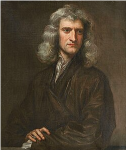

Sir Isaac Newton (/ˈnjuːtən/ ⓘ; 4 January 1643 [O.S. 25 December 1642][5] – 31 March [O.S. 20 March] 1727[4]) was an English polymath who was a mathematician, physicist, astronomer, alchemist, theologian, author and inventor.[7] He was a key figure in the Scientific Revolution and the Enlightenment that followed.[8] His book Philosophiæ Naturalis Principia Mathematica (Mathematical Principles of Natural Philosophy), first published in 1687, achieved the first great unification in physics and established classical mechanics.[9][10] Newton also made seminal contributions to optics, and shares credit with the German mathematician Gottfried Wilhelm Leibniz for formulating infinitesimal calculus, although he developed calculus years before Leibniz. Newton contributed to and refined the scientific method, and his work is considered the most influential in bringing forth modern science.
If you want to read more so click on highlight word which has in this line.